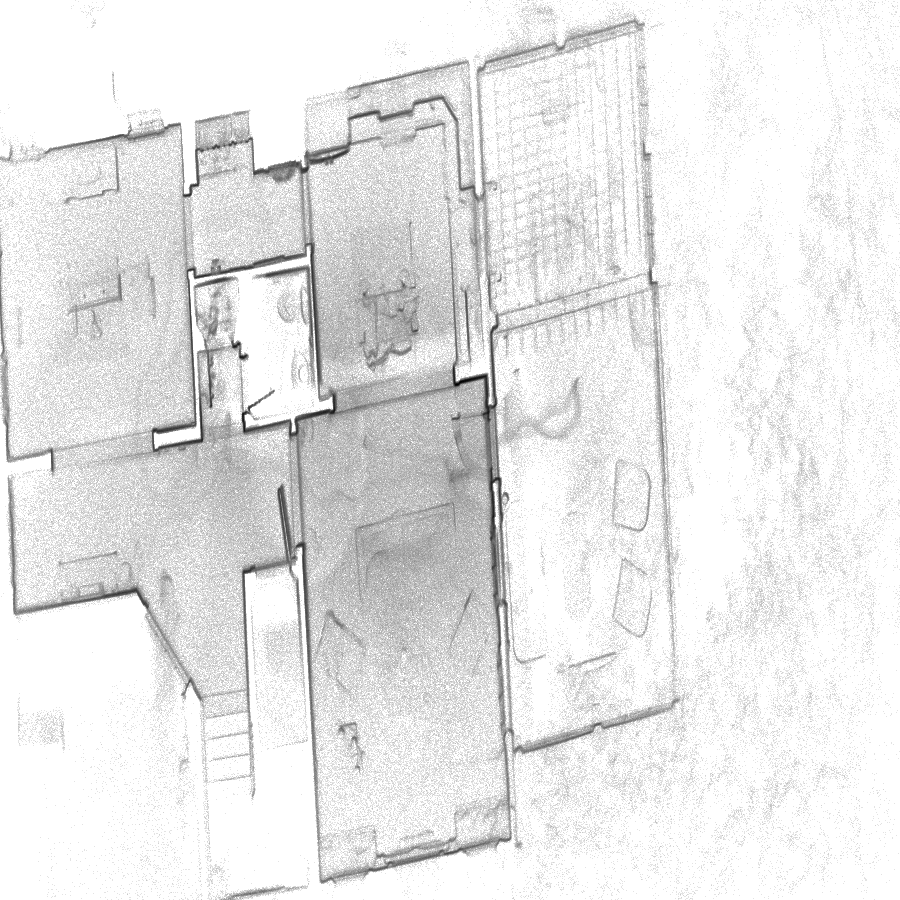

BDPC × CAD Guardian · client evidence center
Preflight report library
Five completed reports document source readiness, scan coverage, point-cloud geometry, and shared-coordinate evidence before licensed CAD production begins.
Visual-first review: the scan visual index, core geometry audit, and registration overlay are the fastest way to understand what was delivered, how the scans relate, and which sources control production.

Report 02 · Featured
Scan visual index
Contact sheets and production-role classification for all five LiDAR sessions.
Open visual index →
Report 04
LAS core geometry
Robust extents, outlier inflation, density views, and usable coverage.
Open geometry audit →
Report 05
Registration overlay
Combined occupancy, likely units, and pairwise shared-coordinate evidence.
Open overlay audit →Report 01
Source intake
Source package, readiness, dependencies, duplicates, and privacy controls.
Open intake report →Report 03
LAS header audit
Point counts, LAS format, scale, raw extents, and read validation.
Open header audit →Commercial record
Scope & authorization
Printable three-sheet fixed-fee statement of work.
Open SOW →